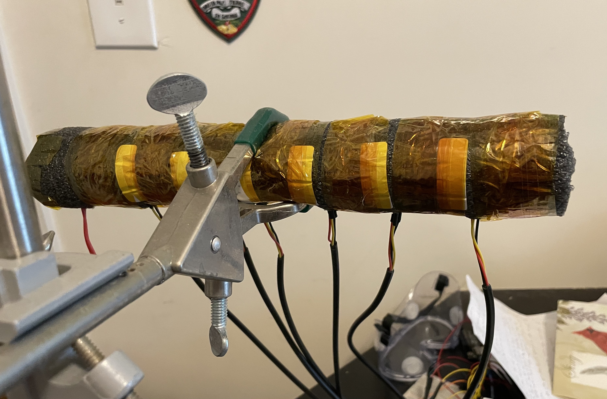
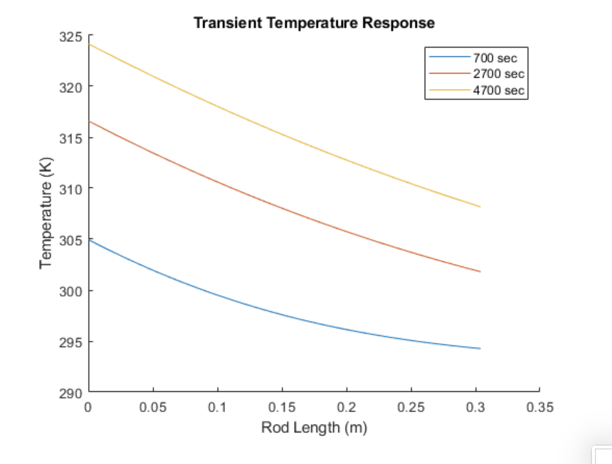
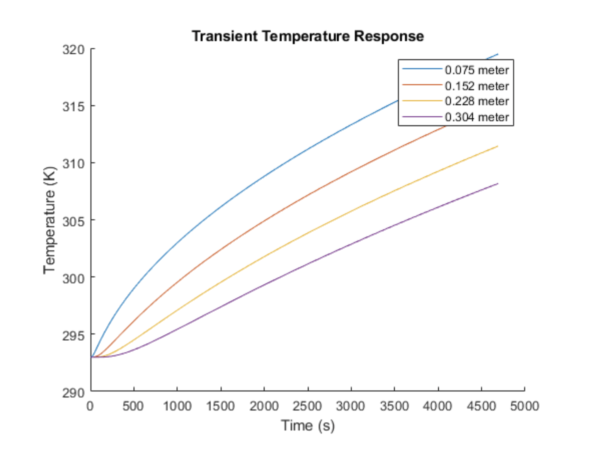
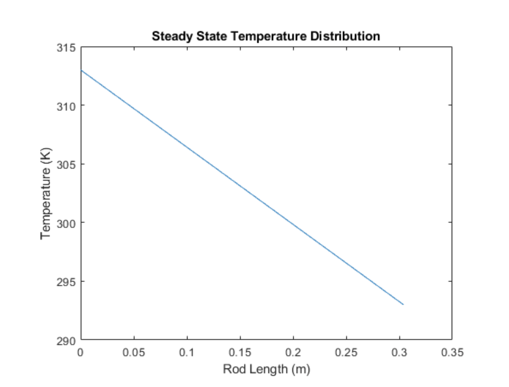
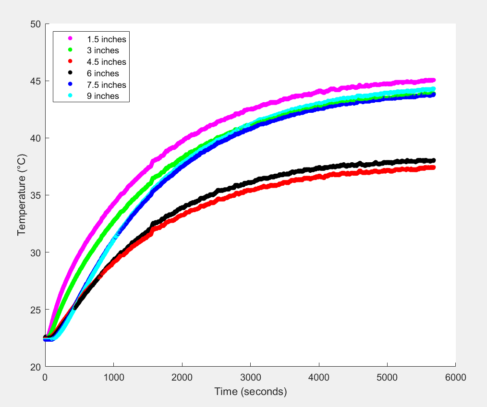

Introduction
My role as a course assistant for Thermal Fluid Systems 1 was mostly to grade assignments, but I also had the opportunity to work on a couple conceptual demonstrations for the class. Through this demonstration I was seeking to display heat transfer through conduction to students by monitoring the temperature distribution across a rod as heat was applied to one end of the rod.
Conduction Experiment
Simulation
To begin thinking about how best to demonstrate conduction, I put together a simulation of the temperature response using the tools taught in class. I was imagining a rod with a fixed heat flux interface on one end from an electric heater and then insulation around the remainder of the rod excluding the end opposite the heater where heat would be released by convection into the air. Since I was planning to conduct the experiment in a room with still air, I decided to ignore the heat transfer contribution from convection.
I modeled the initial transient temperature distribution when the heater is turned on by treating the rod as a semi-infinite solid, likely a fair assumption when only considering the temperature distribution for the start up process. To determine this transient temperature distribution mathematically, I used the solution to the differential heat equation for a semi-infinite solid with a fixed heat flux boundary condition.
 I modeled the final linear, steady-state temperature distribution using Fourier's Law of conduction. Ultimately, I was trying to use the simulation to identify and avoid problems that might arise once actually setting up the experiment. One of these problems was predicting how long it would take to reach steady state. The faster it could reach steady state, the better. That way the demonstration could be observed over the course of a class period. Since I didn't include any heat loss in my modeling of the transient temperature distribution, it was unclear how long it would actually take to reach steady state. Nonetheless, one could use the transient temperature distribution model to guess at when transient effects became negligible.
Experimental Setup
Construction of Experiment Setup - Part 1
Construction of Experiment Setup - Part 2
Data Collection Trials
Turning on the heater produced a wretched stench of plastic fumes, likely the result of the insulation melting slightly. To stay safe, I turned on two fans in my room to improve air circulation and evacuated my room. I initially encountered a number of different technical challenges in trying to record temperature data. One of these failed trials is included below, but I failed to document many of the other trials since screen recordings would fail if I left my computer unattended for too long and it fell asleep.
Timelapsed Temperature Distribution of Rod During Initial Test
Temperature Distribution of Rod During Initial Trial
Looking at the plot above, the logarithmic looking graph with each curve approaching an asymptotic end is as expected. During the transient phase, the temperature of each sensor reading increases as heat is transferred through the rod. As the rod heats, it eventually reaches a point where the heat added by the heater equals the heat lost from the rod—likely predominantly at the uninsulated rod end.
The key issue with these first set of experiments was the unexpected transient temperature distribution where points in the middle of the rod were taking longer than points further down the rod to heat up despite being closer to the heat source. After verifying that each sensor was located along the rod in the expected position, I inferred that the problem could be explained by loosely mounted temperature sensors. In particular, I thought the temperature sensors located at 4.5 and 6 inches (the red and black lines) weren't secured as well as the other temperature sensors to the brass rod. If they were pushed away from the rod and towards the insulation they might read cooler temperatures. This hypothesis seemed likely given that those temperature sensors were located adjacent to where the clamp holds onto the rod and could thus be displaced by the clamp. To address this issue, I resecured all the temperature sensors.
Adjustments of Experiment Setup
Resecuring the temperature sensors improved the transient temperature distribution for the middle temperature readings, but the sensor 9 inches away from the heat source was still reading hotter than the sensor 7.5 inches away from the heat source. Furthermore, the time to reach steady state was still over four hours! That's far too long to be observed live during a class period.
Timelapsed Temperature Distribution of Rod During Sensor Adjustment Test
In an effort to accelerate the time to steady state, I placed a fan in front of the exposed rod end. The fan's airflow was directed tangent to the surface of the exposed end at full blast. The addition of the fan did accelerate the time to steady state—maybe by about an hour—but not enough for this conduction experiment to be a feasible class demonstration. Additionally, the steady state temperature distribution was significantly lower with the addition of the fan. This result is expected as heat is lost from the rod at a faster rate with the addition of the fan.
Fan in Experimental Setup
Timelapsed Temperature Distribution of Rod During Fan Test
Conclusion
Unfortunately, I ran out of time to compare the experimental data with the simulated temperature distribution data. Nonetheless, I learned a lot through this project both in the realm of heat transfer and electronics. Hopefully, another Thermal Fluid Systems TA will take on this project later down the line.
Modeling - Matlab Code
clear all
close all
% Author: Ronan Gissler
% The purpose of this code is to detail the design parameters for a heat
% conduction experiment using a long rod with a heater on one end. The goal
% of this experiment is to both demonstrate the transient temperature
% distribution as the rod is initially heated and then the steady state
% temperature distribution that is reached later on.
% Initial Design Parameters
% ---------Rod----------
rodLength = 12 * 0.0254; % 12 inches converted to m, from Amazon link
rodDiameter = 0.5 * 0.0254; % 0.5 inches converted to m, from Amazon
link
rodArea = pi*((rodDiameter / 2)^2);
% --------Brass---------
density = 8400; % kg/m^3, from research paper, also matches Matweb
specHeat = 380; % J/kg*K from research paper, also matches other sites
thermCond = 120; % W/m*K fro research paper, also matches Matweb
thermDiff = thermCond / (density * specHeat); % m^2/s, diffusivity
% --------Heater----------
Qdot = 1; % Between 1 to 30 W for the flexible polyamide adhesive heater
% plates I was looking at on Amazon
% -----------------Steady State Temperature Distribution----------------
% Assuming the rod is insulated along it's length, then Fourier's Law of
% Conduction can be used to model the temperature distribution in the rod.
% Qdot = k*A*(deltaT / deltaX) ->
% Qdot = thermCond*rodArea*( (deltaT) / (rodLength) )
deltaT = (Qdot*rodLength) / (thermCond*rodArea)
pos = 0:0.001:rodLength;
linTemp = (deltaT/rodLength)*flip(pos) + 293; % assuming rod end is at room temp
% pos is flipped since heat source assumed to be at pos = 0
% plot steady state temperature distribution across rod length
figure(1)
plot(pos, linTemp)
xlabel('Rod Length (m)')
ylabel('Temperature (K)')
title('Steady State Temperature Distribution')
% ------------------Transient Temperature Distribution-----------------
% The transient temperature distribution can be modeled using a
% semi-infinite solid with fixed heat flux into the interface.
% Unlike the steady state temperature distribution which is only a function
% of position, the transient temperature distribution is also a function of
% time.
Ti = 293; % K, rod is initially at room temp across its length
heatFlux = Qdot/rodArea;
% make a array of temp. gradients at each point along
% the rod for the steady state case
tempGradSS = -(deltaT/rodLength) .* ones(length(pos) - 1, 1);
tempGradSS = tempGradSS'; % transpose vector
% Predict how long it will take temperature distribution to reach steady
% state using L^2 / alpha
timeToSS = (rodLength^2) / thermDiff
jj = 0;
delT = 10; % 10 second increments for each time step
% inner for loop moves through time steps
while (true)
t(jj+1) = jj*delT; %2.25
const = 4*thermDiff*t(jj+1); % 4*alpha*t
% Make boolean for initial run of for loop
initial = true;
for ii=1:length(pos)
transTemp(ii,jj+1) = Ti + (heatFlux/thermCond)*( sqrt(const/pi)*...
exp((-pos(ii)^2)/const) - pos(ii)*erfc(pos(ii)/sqrt(const)));
if (initial)
initial = false;
else
tempGradT(ii - 1) = (transTemp(ii,jj+1) -...
transTemp(ii - 1,jj+1)) / (pos(ii) - pos(ii-1));
end
end
% End time stepping when temperature gradient is approximately equal to
% the steady state temperature gradient (i.e. linear) (20% error)
if (mean(abs((tempGradSS - tempGradT) ./ tempGradSS)) < 0.2)
break
end
jj = jj + 1;
end
% plot transient temperature distribution across rod for different
% amounts of time elapsed
figure(2)
hold on
plot(pos, transTemp(:,end-400), 'DisplayName', ...
string(delT*(length(transTemp(1,:)) - 400)) + ' sec')
plot(pos, transTemp(:,end-200), 'DisplayName', ...
string(delT*(length(transTemp(1,:)) - 200)) + ' sec')
plot(pos, transTemp(:,end), 'DisplayName', ...
string(delT*(length(transTemp(1,:)))) + ' sec')
xlabel('Rod Length (m)')
ylabel('Temperature (K)')
title('Transient Temperature Response')
legend()
% plot transient temperature response across rod at different
% rod positions
figure(3)
hold on
plot(t, transTemp(round(size(pos,2)*(1/4)),:), 'DisplayName', ...
string(pos(round(size(pos,2)*(1/4)))) + ' meter')
plot(t, transTemp(round(size(pos,2)*(2/4)),:), 'DisplayName', ...
string(pos(round(size(pos,2)*(2/4)))) + ' meter')
plot(t, transTemp(round(size(pos,2)*(3/4)),:), 'DisplayName', ...
string(pos(round(size(pos,2)*(3/4)))) + ' meter')
plot(t, transTemp(round(size(pos,2)*(4/4)),:), 'DisplayName', ...
string(pos(round(size(pos,2)*(4/4)))) + ' meter')
xlabel('Time (s)')
ylabel('Temperature (K)')
title('Transient Temperature Response')
legend()
Data Collection - Arduino Code
/*
Modified by: Ronan Gissler
Date: May 2021
Reference: This code was adapted from the last minute engineers tutorial on reading data from
multiple DS18B20 temperature sensors linked here:
https://lastminuteengineers.com/multiple-ds18b20-arduino-tutorial/
*/
#include <OneWire.h>
#include <DallasTemperature.h>
// Data wire is plugged into digital pin 6 on the Arduino
#define ONE_WIRE_BUS 6
// Setup a oneWire instance to communicate with any OneWire device
OneWire oneWire(ONE_WIRE_BUS);
// Pass oneWire reference to DallasTemperature library
DallasTemperature sensors(&oneWire);
int deviceCount = 0;
float tempC;
int count = 0;
//int initTime, finTime; // used to measure the duration of the loop() function
// variable to hold device addresses
DeviceAddress addr;
void setup(void)
{
sensors.begin(); // Start up the library
Serial.begin(9600);
// // locate devices on the bus
// Serial.print("Locating devices...");
// Serial.print("Found ");
deviceCount = sensors.getDeviceCount();
// Serial.print(deviceCount, DEC);
// Serial.println(" devices.");
// Serial.println("");
}
void loop()
{
//initTime = millis();
// Send command to all the sensors for temperature conversion
sensors.requestTemperatures();
// Print the loop counter as a measure of time for the MATLAB plot
Serial.print(count);
Serial.print(" ");
// Display temperature from each sensor
for (int i = 0; i < deviceCount; i++)
{
// Serial.print("Sensor ");
// Serial.print(i+1);
// Serial.print(" : ");
tempC = sensors.getTempCByIndex(i);
Serial.print(tempC);
Serial.print(" ");
// sensors.getAddress(addr, i);
// printAddress(addr);
// Serial.print((char)176); //shows degrees character
// Serial.print("C | ");
// Serial.print(DallasTemperature::toFahrenheit(tempC));
// Serial.print((char)176); //shows degrees character
// Serial.println("F");
}
count = count + 1;
// End of temperature reading batch is communicated to MATLAB by a newline character
Serial.println();
delay(1000);
//finTime = millis();
//Serial.println(finTime - initTime); // print duration of loop()
}
void printAddress(DeviceAddress deviceAddress)
{
for (uint8_t i = 0; i < 8; i++)
{
if (i == 0){
Serial.print("0x");
}
if (deviceAddress[i] < 0x10){
Serial.print("0");
}
Serial.print(deviceAddress[i], HEX);
}
Serial.println("");
}
Data Collection - MATLAB Code
clear all
% initialize serial object at port where Arduino USB connects to PC
serPort = serialport('com3', 9600); % 9600 is the baud rate
% setup function call to read data when available on serial port
configureCallback(serPort, "terminator", @readSerialData);
figure(1)
xlabel('Time (seconds)')
ylabel(['Temperature (' char(176) 'C)'])
legend('1.5 inches','3 inches','4.5 inches','6 inches','7.5 inches','9 inches',...
'AutoUpdate','off','Location','northwest')
hold all
% hit run twice to ensure legend shows up properly
function countNew = readSerialData(src,evt)
% read in value from serial port
data = readline(src);
% drop new line character from data
data = (splitlines(data));
% split into array based on spaces
data = split(data(1));
% drop last element
data = data(1:end-1);
% convert temperature values from strings to doubles
data = str2double(data);
% each iteration of the Arduino loop() lasts 2.112 seconds
time = 2.112*data(1);
plot(time, data(3), 'm.', 'MarkerSize', 15);
plot(time, data(6), 'g.', 'MarkerSize', 15);
plot(time, data(2), 'r.', 'MarkerSize', 15);
plot(time, data(4), 'k.', 'MarkerSize', 15);
plot(time, data(5), 'b.', 'MarkerSize', 15);
plot(time, data(7), 'c.', 'MarkerSize', 15);
disp(data) % write data to command window
end